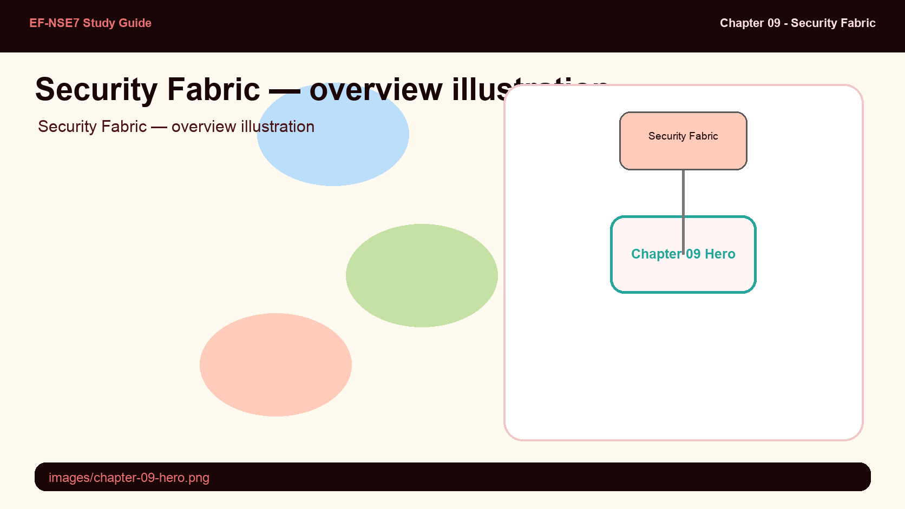
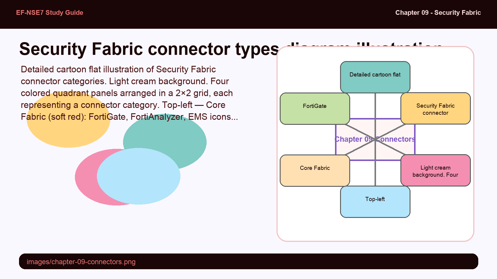
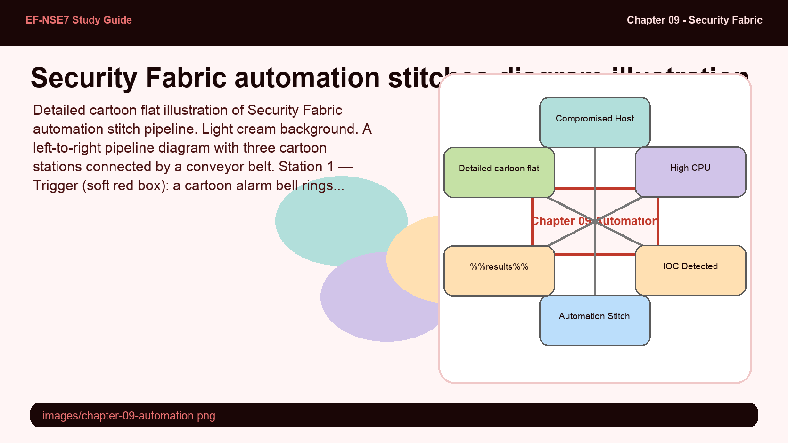

Security Fabric
Connecting Fortinet and third-party products into a unified, automated security ecosystem

Detailed cartoon flat illustration of the Fortinet Security Fabric ecosystem. Light cream background. In the center, a large cartoon FortiGate root appliance (red boxy device labeled 'Root FortiGate') sits like a sun, with multiple connector lines radiating outward like rays. Each ray connects to a different cartoon product/service icon: FortiAnalyzer (log book character, lavender), FortiManager (console/server, teal), FortiClient EMS (laptop with agent shield, mint green), FortiSandbox (a cartoon sandbox box with suspicious files inside, peach), FortiNDR (a neural network brain icon, soft purple). On the outer ring, external connector icons: AWS / GCP clouds (cloud shapes in baby blue), Kubernetes (helm wheel, teal), FSSO (user group icon), Threat Feeds (threat shield with feed arrows). A banner at the top reads 'Broad · Integrated · Automated' in three colored badges. Automation stitch arrows connect products with lightning bolt icons. Fully detailed cartoon style, soft flat fills, pastel palette (red, lavender, teal, mint, peach, cream), bold outlines, white background.
Fabric Connectors & External Connectors
The Security Fabric is Fortinet's platform for broad visibility across the attack surface, integrated product communication, and automated response. At its core, FortiGate acts as the root — downstream FortiGate units, FortiAnalyzer, FortiManager, FortiClient EMS, and FortiSandbox all join the Fabric and share telemetry, context, and enforcement signals through a common API fabric.
Fabric connectors connect Fortinet products: core network security connectors include FortiGate, FortiAnalyzer, and EMS; security fabric connectors add FortiManager and FortiSandbox. External connectors extend the Fabric to third-party platforms: Public SDN (AWS, GCP), Private SDN (Kubernetes, VMware, SAP), Endpoint/Identity (FSSO, RADIUS SSO), and Threat Feeds (FortiGuard, external malware hash lists via HTTP/HTTPS, STIX/TAXII, or Push API). External threat feeds dynamically populate address objects used in firewall policies — when FortiGuard or a third-party feed updates a malware hash or malicious IP list, FortiGate automatically updates the associated policy without any manual intervention.

Detailed cartoon flat illustration of Security Fabric connector categories. Light cream background. Four colored quadrant panels arranged in a 2×2 grid, each representing a connector category. Top-left — Core Fabric (soft red): FortiGate, FortiAnalyzer, EMS icons with connecting lines. Top-right — Security Fabric (soft lavender): FortiManager, FortiSandbox icons, with a sandboxed file cartoon. Bottom-left — External SDN/Cloud (baby blue): AWS cloud logo (simplified), GCP logo, Kubernetes helm wheel, VMware vSphere icon, all connected to a FortiGate via REST API arrows. Bottom-right — Threat Feeds & Identity (soft mint): A threat feed scroll icon (malware hashes), FSSO person icon, FortiGuard shield. Each quadrant has a label chip in bold. Connector arrows cross the center where FortiGate sits as a hub. Fully detailed cartoon style, pastel palette, bold outlines, cream background.
Security Fabric Use Cases
FortiAnalyzer centralized logging within the Security Fabric avoids duplicate log entries — only the first FortiGate that handles a session logs it; downstream FortiGates that see the same session (in asymmetric routing scenarios) do not log it again. This requires the session to be marked as handled by the root/upstream FortiGate.
FortiNDR (Network Detection and Response) uses machine learning and artificial neural network (ANN) models to detect anomalous network behavior. In inline blocking mode, FortiNDR sits in-path and can actively block detected threats. FortiNAC enforces network access control — when a device is tagged by FortiNAC, it uses the REST API to push a dynamic firewall address to FortiGate, which is automatically associated with policies. The FortiNAC tag identifies the device's access tier, and FortiGate applies matching policies without administrator intervention. SAML SSO using the root FortiGate as Identity Provider (IdP) allows downstream FortiGate units and FortiManager to delegate authentication — a user logs in once and accesses all Fabric-integrated management consoles with a single identity.

Detailed cartoon flat illustration of Security Fabric automation stitch pipeline. Light cream background. A left-to-right pipeline diagram with three cartoon stations connected by a conveyor belt. Station 1 — Trigger (soft red box): a cartoon alarm bell rings above a FortiGate; labels show trigger types: 'Compromised Host', 'High CPU', 'IOC Detected'. A small LED indicator blinks. Station 2 — Stitch (soft lavender box): a cartoon sewing machine labeled 'Automation Stitch' connects trigger to action; a needle with thread labeled '%%results%%' stitches them together. Station 3 — Action (soft teal box): shows three action icons stacked — a ban icon (quarantine host), an email envelope (alert email), and a webhook curl icon (call external API). An animated lightning bolt flows through the belt from Trigger to Stitch to Action. Below, a timeline strip shows the automated response completing in under 1 second. Fully detailed cartoon style, pastel palette (red, lavender, teal), bold outlines, cream background.
Configure Automation Stitches
Automation stitches are FortiGate's event-driven response engine. Each stitch binds a trigger (an event or condition) to one or more actions (responses). Built-in triggers include: compromised host detection (FortiClient endpoint quarantine), high CPU (performance threshold breach), IOC (Indicators of Compromise) match from threat feeds, FortiOS event log patterns, and scheduled time. Actions include quarantining a host, sending an email or webhook notification, running a custom script, or calling a FortiAnalyzer API.
The %%results%% variable in action templates expands to the trigger's output data — for example, if the trigger is a compromised host detection, %%results%% contains the host IP, username, and threat name. This lets you embed context-specific information in notification emails or API payloads without hardcoding values. Stitches run on the FortiGate itself and do not require FortiManager, though FortiManager can centrally push and manage stitches across the entire Fabric.